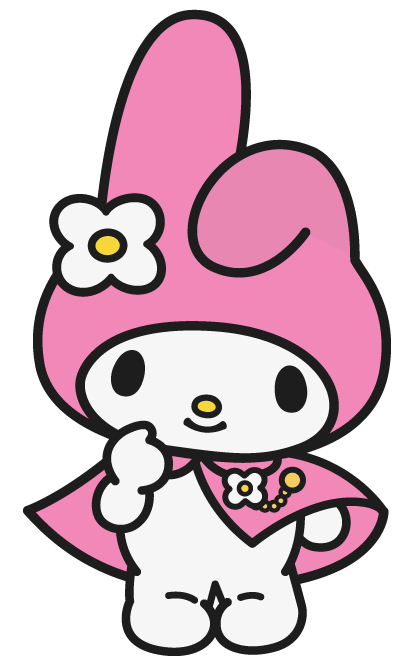

Hello Kitty
Hello Kitty was born in the suburbs of London. She lives with her parents and her twin sister Mimmy who is her best friend. Her hobbies include baking cookies and making new friends. As she always says, "you can never have too many friends!"

My Melody
My Melody was born in the forest of Mariland. Her favorite hobby is baking cookies with her mother, and her favorite food is almond pound cake. She enjoys eating cake with her best friend, a mouse named Flat.

Kuromi
Kuromi is a tomboy, but behind her tough appearance, she is actually very girly. She enjoys writing in her diary and reading romance novels.